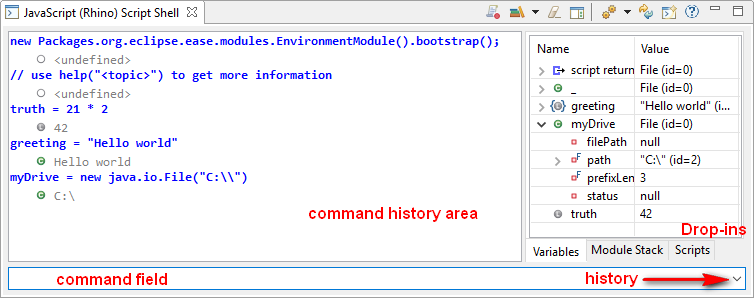

A script shell provides interactive access to a script engine, allowing to try out commands and to interactively explore the script API.
A shell view hosts an isolated instance of a script engine. Isolated means, that the engine does not share variables, functions or objects with other script engines that may be launched in your IDE. When commands are entered in the command field at the bottom, they get executed immediately and command and execution result are written to the command history area. The icon next to the response indicates the response type, which might be a script object, a native Java object, an exception or a void type. Executed commands will be stored in the history, which can be accessed via the dropdown to the right.
The input box supports code completion, which allows to browse through the available functions of data structures. To launch code completion type "ctrl-space". Code completion includes the command history, methods on the current object, available variables, loaded modules, and the whole available Java stack. Most script languages are untyped, making type detection really hard. However in the shell we do know the exact type of a variable. To explore hierarchies you may store intermediate results to new variables or you may use the Variables tab on the righthand side to dig deeper.
The dropins section to the right displays additional runtime information for the script shell.
Allows to select a module to be loaded in the script shell.
Clear the command history.
Toggle visibility of the dropins pane.
Switch the scripting engine. Will also reset the engine.
Reset the current script engine.
Spawn another script shell with its own engine.
Open the scripting help.
Shell preferences are available in Preferences/Scripting/Shell. There you may set your preferred engine or startup commands that will be executed when a shell is spawned/resetted.
The shell quickly becomes a prominent place for daily work. Therefore we try to optimize it for drag & drop operations. Generally the shell tries to adapt anything thrown in to an IScriptable. An extension point is available to add custom drop actions for specific object types.